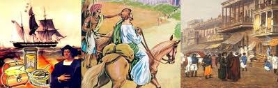

SST
Subject-wise Description of India (Bharat)
Ila Sachani:People traveled to India from around the world in ancient times for many reasons, including: ..
- Trade:India was known for its valuable goods, such as spices, textiles, and precious stones. Merchants and traders traveled to India to establish trade relations and acquire these goods.
- Culture:India's advanced culture, including its art, science, and
- Religious:India was a center for Buddhism, Hinduism, and Jainism, and many travelers came to visit sacred sites and study religious texts.
- Education and knowledgeIndia was home to renowned learning centers like Nalanda and Takshashila, where scholars studied subjects like mathematics, astronomy, medicine, and philosophy.
 India has been connected to the rest of the world by mountain routes in the north, northeast, and northwest. These routes have been used for transportation since ancient times. Some of the routes and geographical features of India include both, sea routes and the land routes such as Himalayas :The Himalayas are divided into three zones: Western, Central, and Eastern. The Himalayas have shaped the life of India in many ways. Indian Ocean: The Indian Ocean is an important international sea route for India. India is a leading contender for this sea route due to its proximity. etc have proved to be a huge passage between India and the world to exchange ideas and commodities. Commodities and Spices were also exported through these routes. As these routes let the world explore India, they also helped Western influences to reach India.